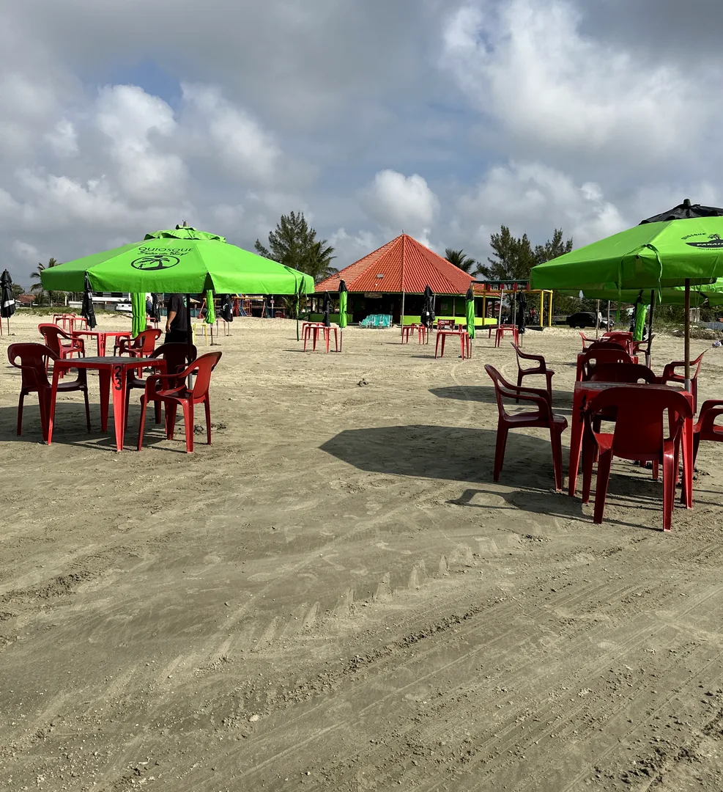
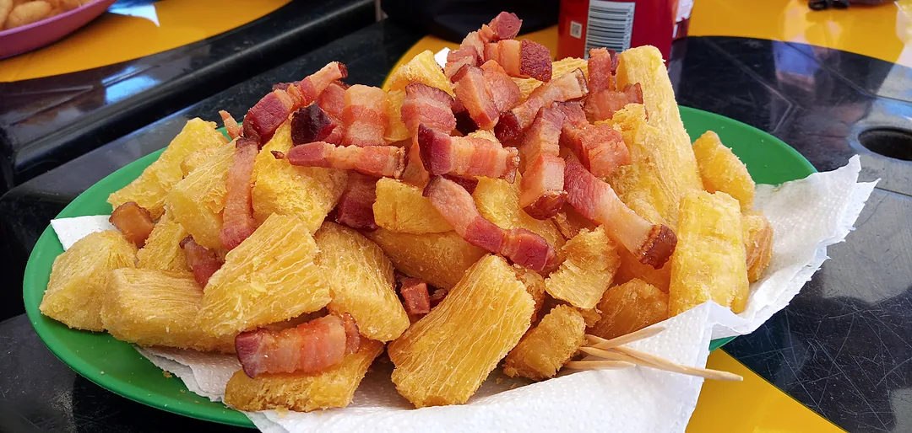
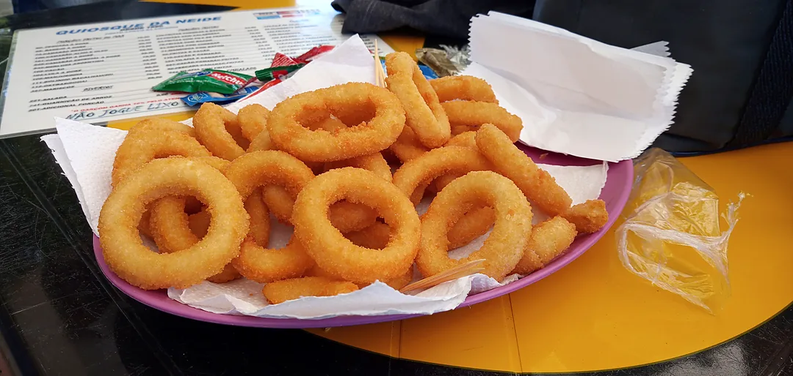
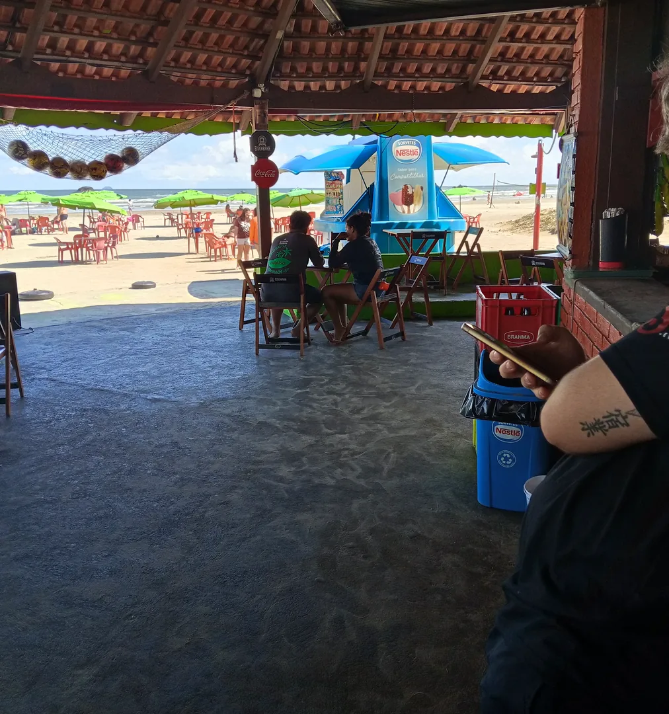

Pé na areianas Toninhas.
Porções de frutos do mar, peixe frito na hora, caipirinhas e cerveja trincando com a hospitalidade do Betto e equipe em Ubatuba.
Seu ponto certo na Praia das Toninhas.
- 01
Mesas e guarda-sóis pé na areia
Estrutura confortável de frente para o mar das Toninhas para curtir em família ou amigos.
- 02
Atendimento acolhedor do Betto
Hospitalidade elogiada em mais de 416 avaliações reais pela simpatia e agilidade na areia.
- 03
Cozinha caiçara e bebida trincando
Peixes, camarões e petiscos fritos na hora acompanhados de cerveja super gelada e caipirinhas.
- 04
Duchas e banheiros limpos
Comodidade completa na Rua Willy Aureli, 1232 para você passar o dia inteiro sem preocupação.
Da cozinha direto pra areia.
Peixe Frito & Em Postas
Peixe fresquinho, dourado na hora e servido com limão e acompanhamentos.
Camarão Crocante
Porções generosas de camarão à dorê ou ao alho e óleo para compartilhar.
Lula & Iscas de Peixe
Anéis de lula macios e iscas de peixe empanadas perfeitas para petiscar no sol.
Casquinha & Pastéis
Casquinha de siri temperada e pastéis crocantes recheados na hora.
Porções da Praia
Fritas especiais, mandioca crocante, calabresa acebolada e petiscos clássicos.
Caipirinhas & Cerveja
Cervejas de garrafa e lata trincando, caipirinhas de frutas frescas, coco e sucos.




Clima pé na areia, porções fresquinhas e estrutura completa na Praia das Toninhas — Ubatuba-SP.
416 avaliações reais no Google Maps · Elogiado pelo atendimento familiar e comida fresca
Perguntas frequentes.
Onde fica o Quiosque Ponto de Encontro?
Estamos na Rua Willy Aureli, 1232 — direto na faixa de areia da Praia das Toninhas, em Ubatuba-SP.
Como falar com o Betto para reservar mesa?
Basta clicar no botão do WhatsApp (12) 99766-1305 ou preencher o simulador acima para mandar sua mensagem pronta.
Tem banheiro e ducha para quem fica na praia?
Sim! Nossos clientes contam com mesas e guarda-sóis na areia, além de duchas de água doce e banheiros limpos.
Quais formas de pagamento são aceitas?
Aceitamos Pix, cartões de débito, cartões de crédito e dinheiro.
Praia das Toninhas · Ubatuba.
Rua Willy Aureli, 1232 — Praia das Toninhas
Ubatuba - SP · CEP 11680-000